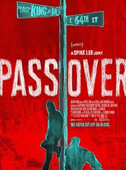

Segunda Cinéfila
Segunda Cinéfila

|
PIXOTE: A LEI DO MAIS FRACO (1981) Menor abandonado de 11 anos vive na rua após a fuga de um reformatório, onde aprendeu bastante sobre o crime ao conviver com todos os tipos de delinquentes. Ele sobrevive no Rio de Janeiro atuando como traficante, assassino e, até, cafetão. Direção: Héctor Babenco DISPONÍVEL EM: LOOKE |

|
O CIDADÃO ILUSTRE (2016) Um escritor argentino e vencedor do Prêmio Nobel, radicado há 40 anos na Europa, volta para sua terra natal, ao povoado onde nasceu e que inspirou a maioria de seus livros, para receber o título de Cidadão Ilustre da cidade. Direção: Gastón Duprat, Mariano Cohn DISPONÍVEL EM: NETFLIX |

|
MALCOLM X (1992) O líder afro-americano Malcolm X tem o pai assassinado pela Klu Klux Klan e sua mãe internada por insanidade. Preso aos 20 anos de idade, Malcolm se converte ao islamismo e passa a pregar seus ideais. Direção: Spike Lee DISPONÍVEL EM: PRIME VIDEO |

|
TRAFFIC (2000) Um thriller contemporâneo ambientado no mundo das drogas, sobre os altos ganhos e riscos do tráfico, relatados através de histórias interligadas, algumas altamente pessoais, outras cheias de intriga e perigo. Direção: Steven Soderbergh DISPONÍVEL EM: PRIME VIDEO |
|  |
PASS OVER (2018) Dois jovens negros passam o tempo falando besteiras e sonhando com a terra prometida. Direção: Spike Lee, Danya Taymor DISPONÍVEL EM: PRIME VIDEO |
|
EXTRA |
|

|
LOUCA OBSESSÃO (1992) O famoso escritor Paul Sheldon sofre um acidente de carro e é socorrido pela enfermeira Annie, que afirma ser sua fã número um. Direção: Rob Reiner DISPONÍVEL EM: apenas através do crime organizado |